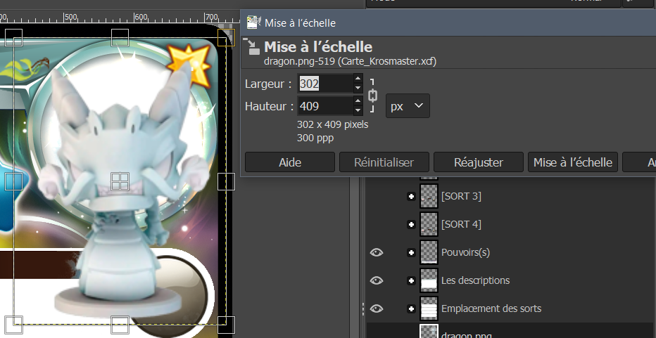
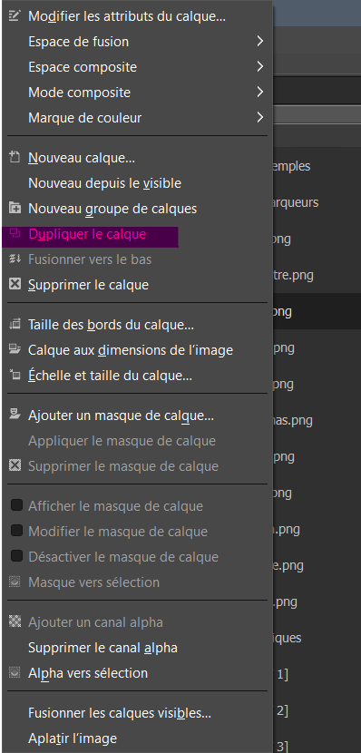

Mettre des images
Si vous arrivé là, c'est que vous avez terminé de modifier votre carte ! Bravo !
Maintenant pour votre figurine :

- Glissez votre image dans Gimp depuis votre bureau/dossier, elle devrait y être maintenant.
- Avec l'outil de mise à l'échelle cliquez sur votre image. Conseil N°7
- Avec les coins de votre image, vous pouvez désormais modifier sa taille, le carré au milieu permettant de la déplacer.
- Appuyez sur Mise à l'échelle pour valider.
- Glisser votre image (dans la partie calque) entre "Emplacement des sorts" et "Background". Conseil N°8
Voilà c'est aussi simple que ça ! Vous pouvez donc ajouter autant d'image sur le template que vous voulez.
Ajouter les marqueurs
vous voulez ajouter ajouter des marqueurs ?
j'aurais peut-être dû mettre ce paragraphe avec le texte... bah je mettrais une référence au pire...
Toutes les images de ces marqueurs sont rangées dans "Les marqueurs". Cliquez pour activer l'oeil de ceux dont vous avez besoin, déplacez-le avec votre outil de déplacement
là où vous vous voulez et le tour est joué ! (Normalement ils sont à la bonne taille donc pas besoin de les redimensionner)
"Mais Cryoxe ! y en a qu'un seul de chaque !" Ce à quoi je répond : "Dupliquez-les."

Faites un clic droit sur le calque que vous voulez dupliquer et vous êtes bon !
(n'hésitez pas à double cliquer sur un nom de calque pour changer son nom et ainsi, mieux vous y retrouver).